Real-Time Global Illumination
全局光照(global illumination, GI)很重要，因为它能增强场景的真实感；但同时它也很复杂，如下图所示（来自某篇关于全局光照的综述论文的 teaser image）：
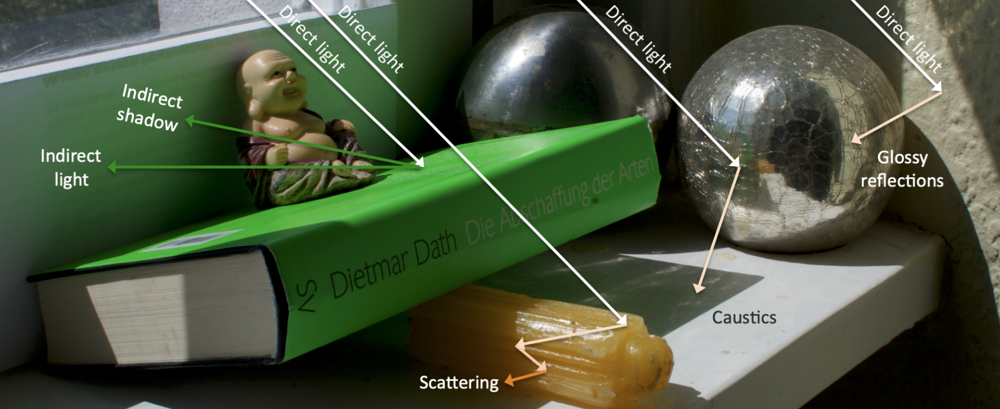
在实时渲染中，人们寻求简单快速的解决方案来处理单次弹射的间接光照。
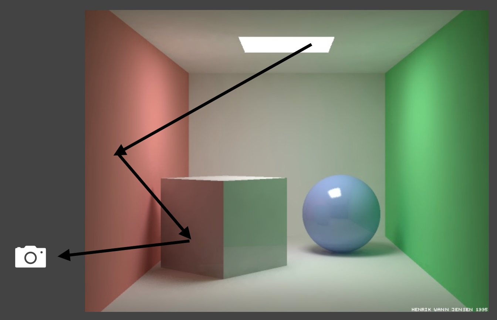
任何直接受光照射的表面都会再次充当光源。
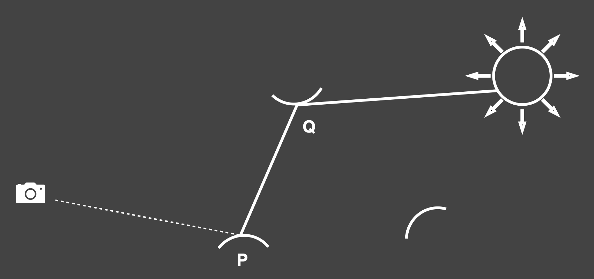
经典老图
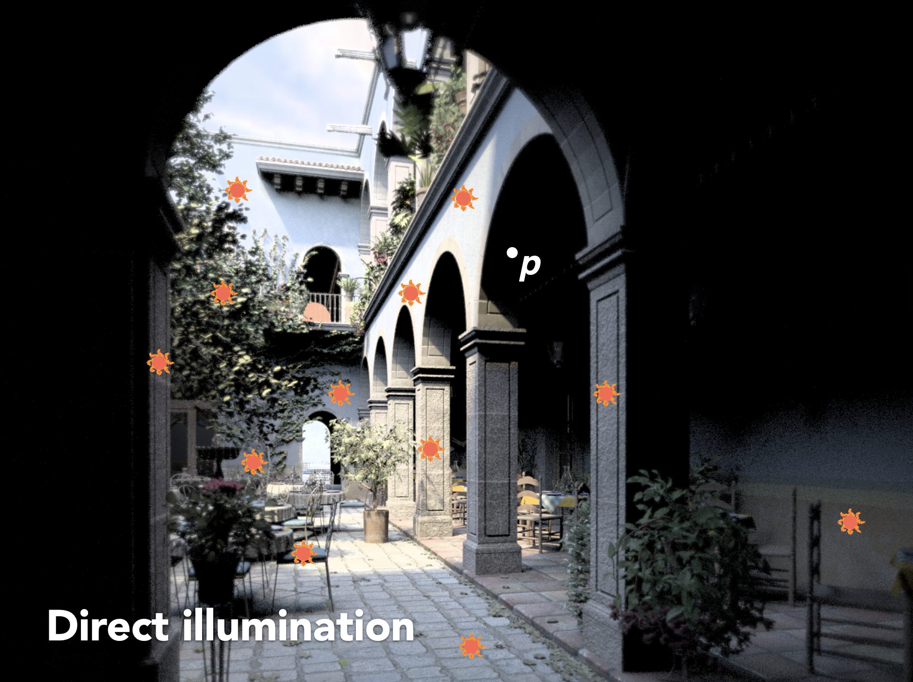
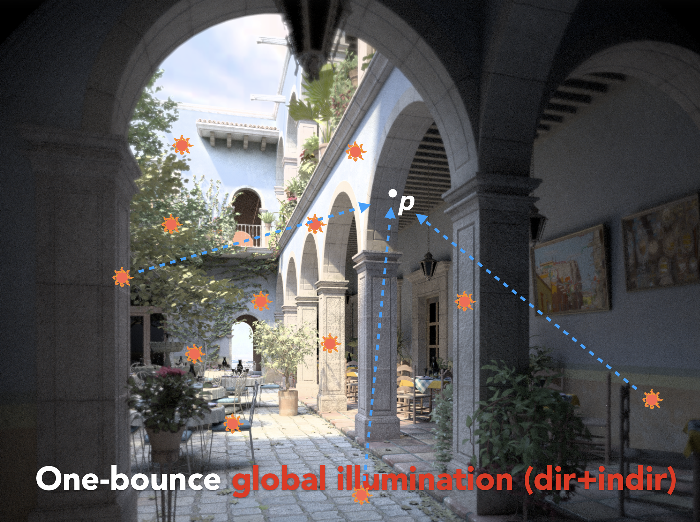
可以看到，如果考虑间接光照，原本在暗处的 p 点就会被其他物体表面反射过来的间接光给照亮。
GI in 3D
Reflective Shadow Maps (RSM)
现在来考虑一个问题：要照亮任意点 p，所需的间接光照条件有哪些？（满足这些条件的技术便是反射阴影贴图(reflective shadow maps, RSM)）
-
哪些面片(surface patch)被直接照亮？
- 可以借助经典的阴影贴图(shadow map)方法解决
- 阴影贴图中的每个像素都是一个小的面片
- 每个像素的确切出射辐射率是已知的，但是只知道沿着相机方向的辐射度
- 我们假设所有反射物(reflectors)都是漫反射的，因此出射辐射率是沿各个方向均匀分布的
-
每个面片对点 p 的贡献是多少？然后汇总所有面片的贡献
-
对覆盖面片的立体角进行积分 -> 对面片面积的积分
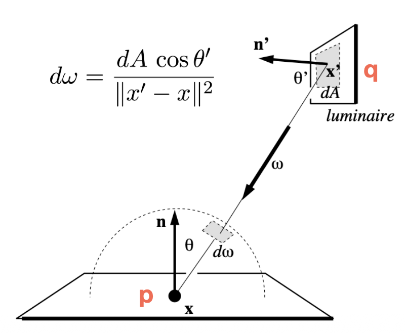
\[ \begin{aligned} L_{o}\left(\mathrm{p}, \omega_{o}\right) & =\int_{\Omega_{\text {patch }}} L_{i}\left(\mathrm{p}, \omega_{i}\right) V\left(\mathrm{p}, \omega_{i}\right) f_{r}\left(\mathrm{p}, \omega_{i}, \omega_{o}\right) \cos \theta_{i} \mathrm{~d} \omega_{i} \\ & =\int_{A_{\text {patch }}} L_{i}(\mathrm{q} \rightarrow \mathrm{p}) V\left(\mathrm{p}, \omega_{i}\right) f_{r}\left(\mathrm{p}, \mathrm{q} \rightarrow \mathrm{p}, \omega_{o}\right) \frac{\cos \theta_{p} \cos \theta_{q}}{\|q-p\|^{2}} \mathrm{~d} A \end{aligned} \] -
对于漫反射面片
- \(f_r = \rho / \pi\)
- \(L_i = f_r \cdot \dfrac{\Phi}{dA}\)（\(\Phi\) 表示入射通量或能量）
-
因此公式可以简化为：
\[ E_p(x, n) = \Phi_p \frac{\max\{0, \langle n_p | x - x_p \rangle\} \max\{0, \langle n | x_p - x \rangle\}}{\|x - x_p\|^4} \]
-
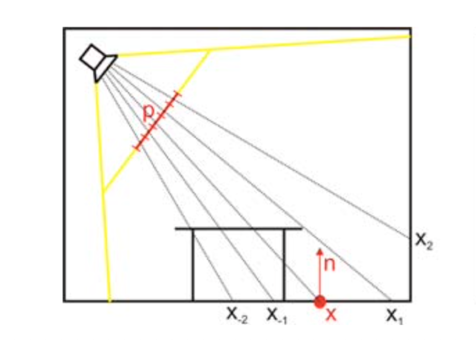
并非所有 RSM 内的像素点都能产生贡献，比如在以下情况中就失效了：
- 可见性（被遮挡）
- 方向（不对）
- 距离（过远）
- 所以对于每一个着色点，只去找离离它较近的面片
- 一个大胆的假设：用两点阴影贴图上的深度值大小来估计两点在世界坐标系中的距离
之所以做出这种假设，是为了加速计算，以减少计算贡献某一点 p 的像素数量。对于更大范围的查询，可以借助 PCSS的第 1 步和第 3 步来实现加速。不过原论文采用了不太一样的方法，这里不展开介绍。
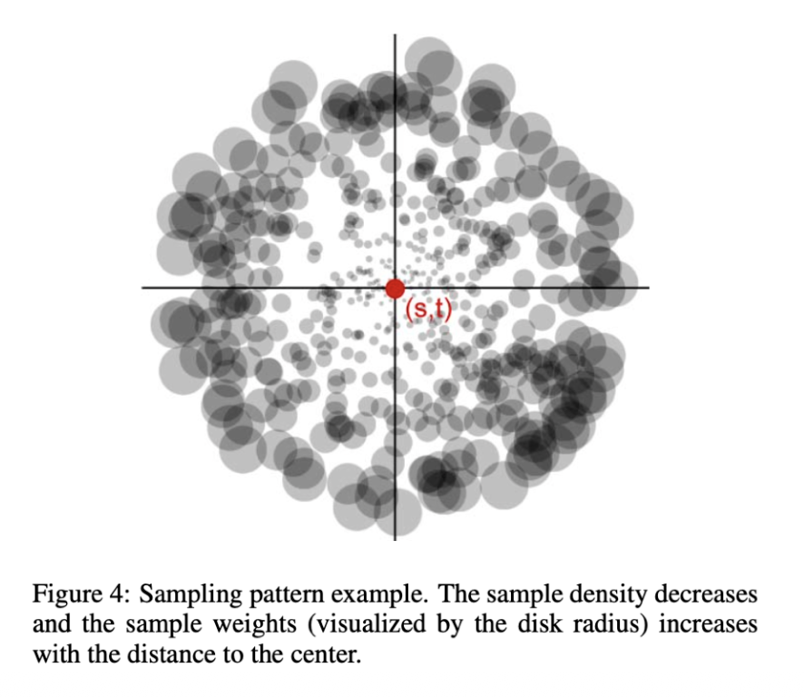
RSM 里往往会记录深度、世界坐标、发现、光照通亮等属性值。
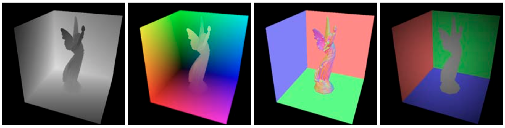
例子
RSM 通常用于实现游戏中的手电筒(flashlight)灯光。
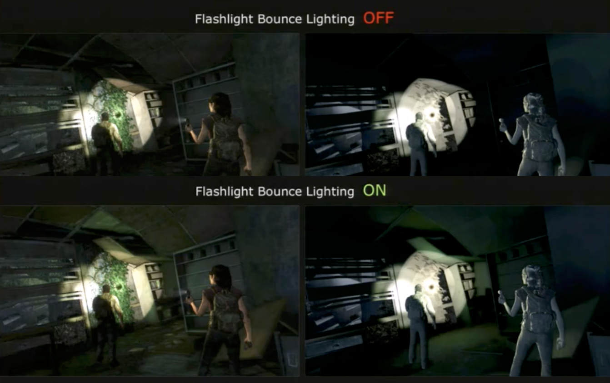
优点：易于实现
缺点
- 性能随光源数量线性衰减
- 无法为间接光照进行可见性检查
- 设置了多项假设，包括反射体是漫反射的、用深度表示距离等
- 采样率与画质间的权衡
Light Propagation Volumes (LPV)
光传播体积(light propagation volume, LPV)技术在 CryEngine 3 被首次引入（用于游戏《孤岛危机》中（显卡危机说是）），它在保持高性能的同时能实现高质量的渲染结果。
例子
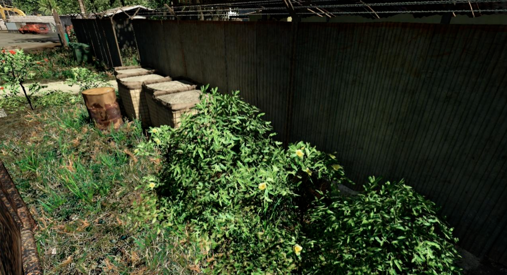
LPV 要解决的关键问题是查询任意着色点在任意方向上的辐射度。其思路是：光（辐射度）沿直线传播且不改变方向。对应的实现方案为采用 3D 网格（每个格子就是一个体素(voxel)），将辐射从直接被光照到的表面传播至其他任何位置上。
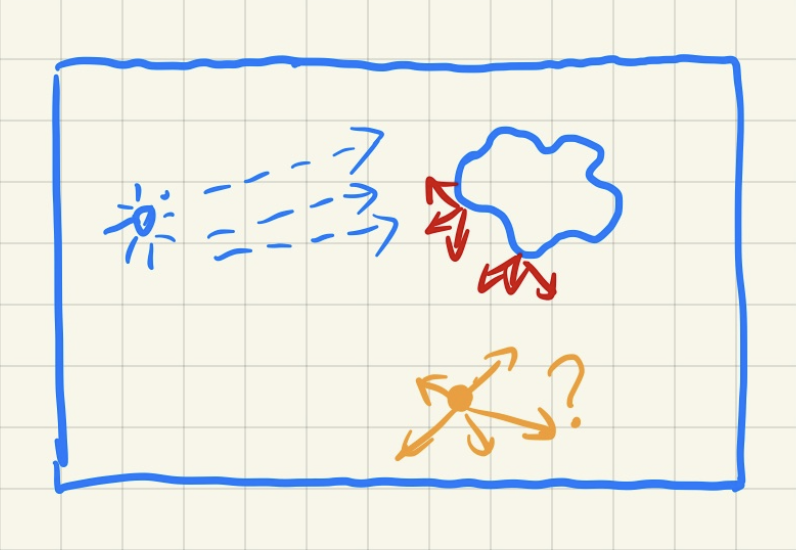
具体步骤如下：
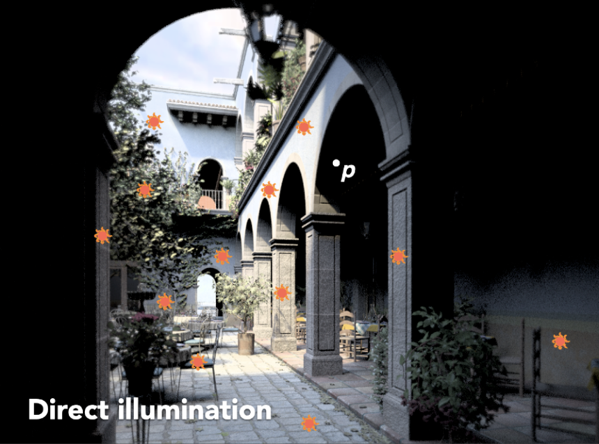
- 生成辐射点集的场景表示
- 寻找被直接照亮的表面
- 使用 RSM 就足够了
- 可以采用更少的漫反射面片数（虚拟光源）
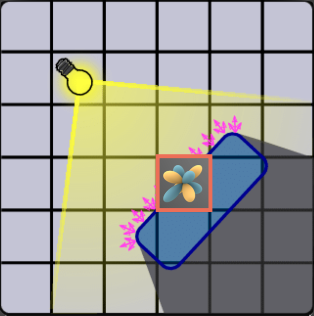
- 将虚拟光源点云（接收到直接光照的点）注入到辐射体积中
- 将场景预分割为 3D 网格
- 对每个网格单元，找出其内部包含的虚拟光源
- 对不同朝向的辐射度分布求和
- 投影至前两阶 SH 函数（共 4 个基函数）来压缩
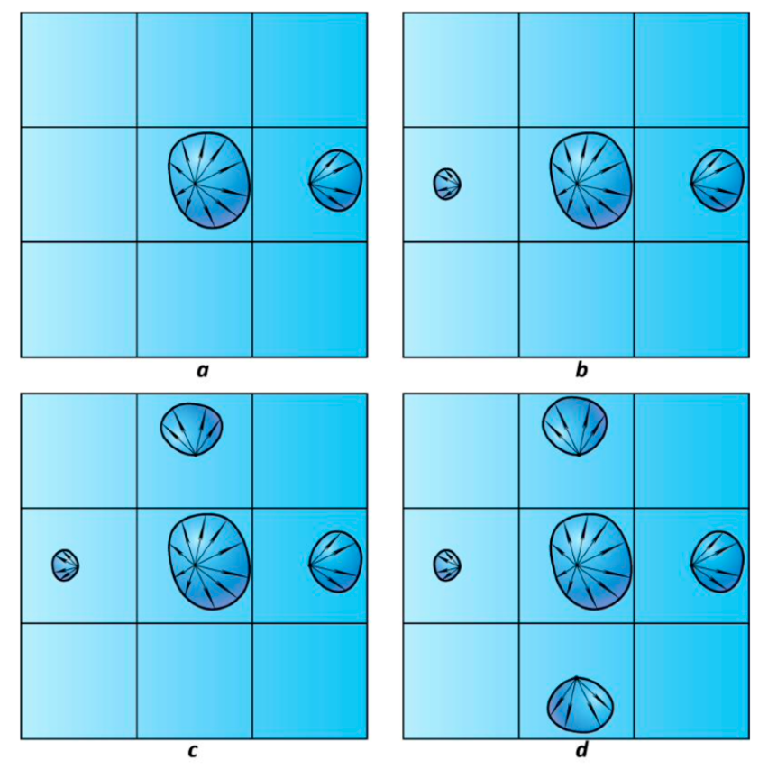
-
体素化辐射传播
- 对于每个网格单元，收集从其六个面接收到的辐射度
- 求和后，再次用 SH 表示
- 重复此传播过程数次，直至体积内的状态趋于稳定（一般迭代四五次就稳定了）
-
使用最终光传播体积进行场景照明
- 对于任意着色点，确定其所在的网格单元
- 获取该网格单元中的入射辐射度（来自所有方向）
- 着色
问题
如下图所示，假设 p 点是能被直接照明的，那么在 p 点反射的光线一定是向左运动的，不可能照亮墙壁右侧。但问题是墙的左右两侧都在同一个网格内，所以墙的右侧和 p 点的辐射度是一样的，那么右侧就会被照亮，这显然是不合理的。
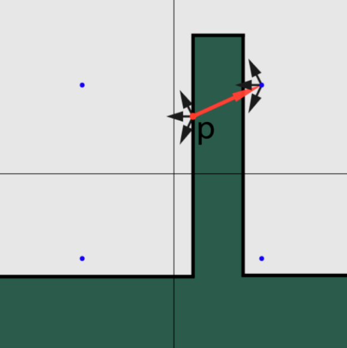
也就是说，只要模型几何体比划分的网格还要细，就会出现漏光(light leaking)现象。解决方法是将网格划分得更细，但会带来额外的存储开销以及计算传播的开销。
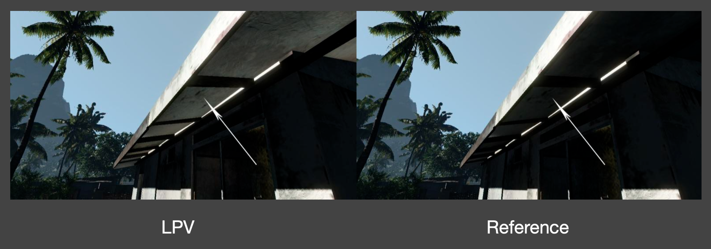
例子

Voxel Global Illumination (VXGI)
第三种方法是体素全局光照(voxel global illumination, VXGI)。它和 RSM 一样是一种两趟算法，但和 RSM 有两点不同：
-
直接照亮的像素（面片）->（分层的）体素
- 体素化整个场景（下图所示的一个个小格子）
- 构建一个分层结构（类似 BVH）
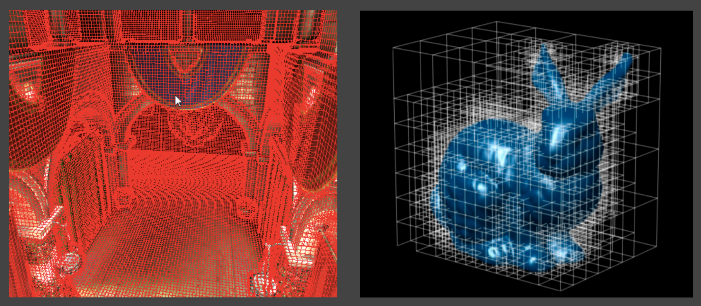
-
在 RSM 上采样（可能不准确）-> 从相机出发，在 3D 空间中追踪反射锥体
VXGI 的两趟过程具体为：
-
来自光源
- 在每个体素中存储入射光线与法线的分布情况
- 在层级结构上进行更新
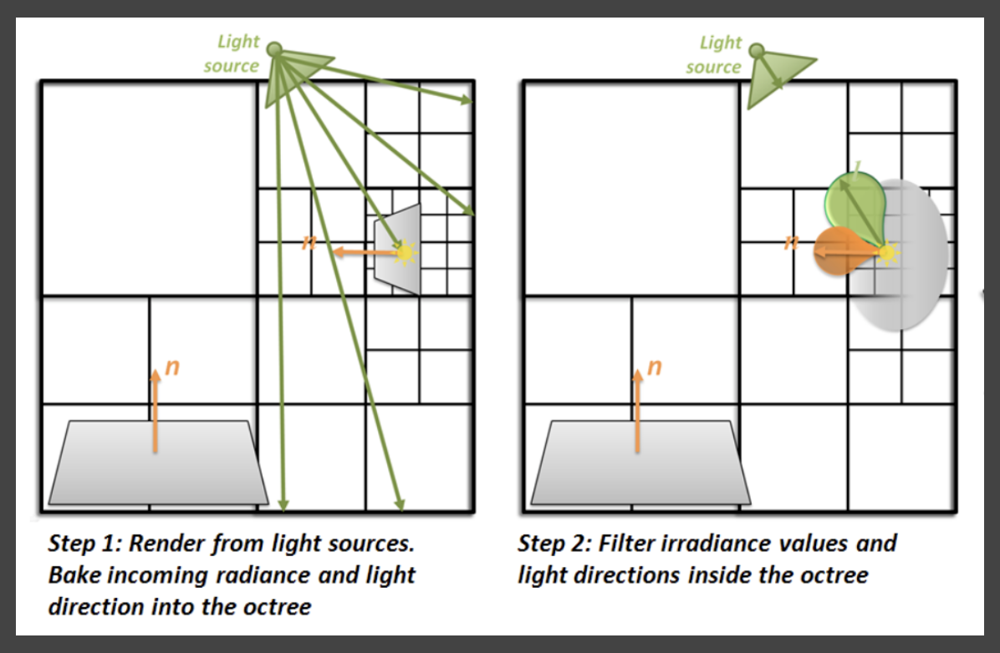
-
来自相机
- 对于金属光泽表面，沿反射方向追踪一个锥体
- 根据（不断增大的）锥体大小查询层级结构
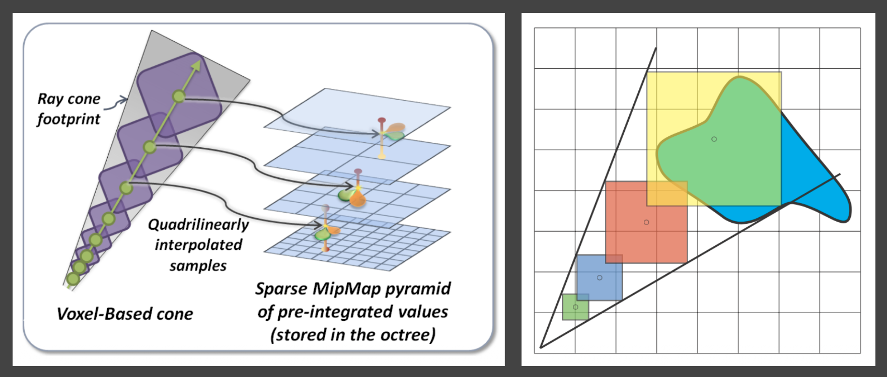
- 对于漫反射，需追踪多个锥体（比如 8 个）
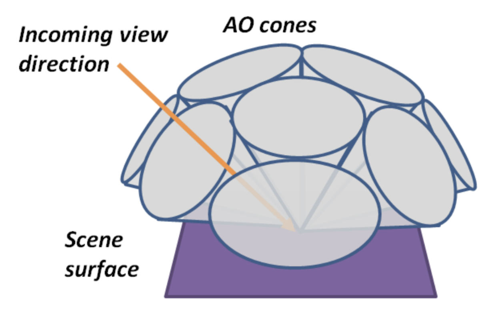
例子
可以看到渲染结果的质量很高，近乎媲美光线追踪。
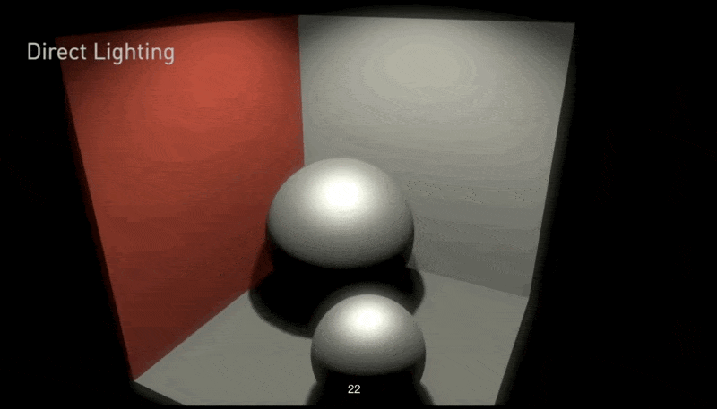
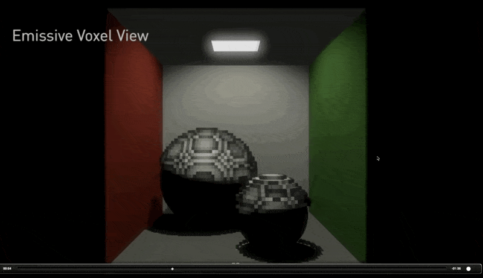
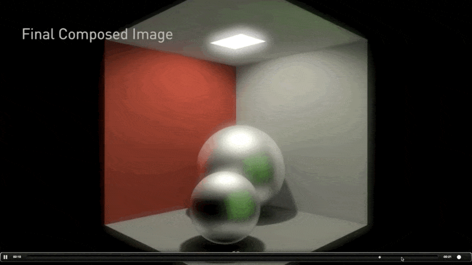
但由于开销较大（对整个场景体素化，若考虑到动态物体则问题还要复杂），因此 VXGI 的应用有限。
GI in Screen Space
「屏幕空间」(screen space)的意思是指仅使用来自屏幕的信息，即对已存在的渲染结果（直接光照）进行后处理(post processing)。
例子
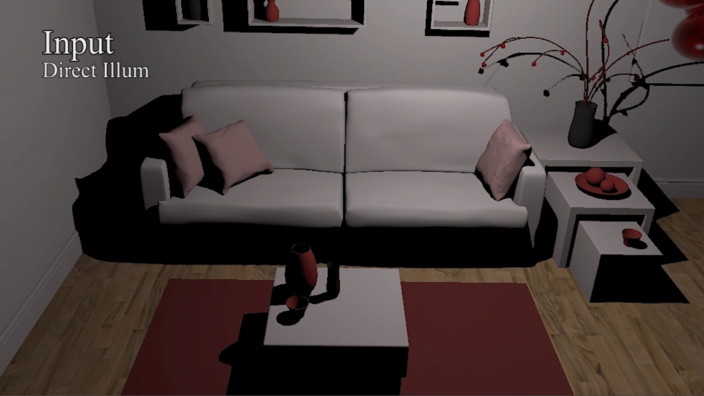
Screen Space Ambient Occlusion (SSAO)
和 LPV 一样，屏幕空间环境光遮蔽(screen space ambient occlusion, SSAO)技术也是由 Crytek 公司首次引入。
例子
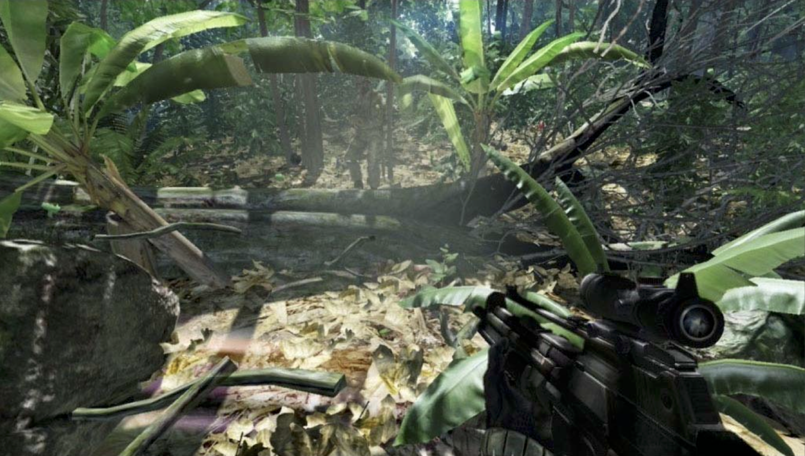
之所以要用到环境光遮蔽（AO），是因为这种技术实现成本低，但同时能增强玩家对物体相对位置的感知。
例子
显然，左边这列图用到了 AO，右边这列没用到。
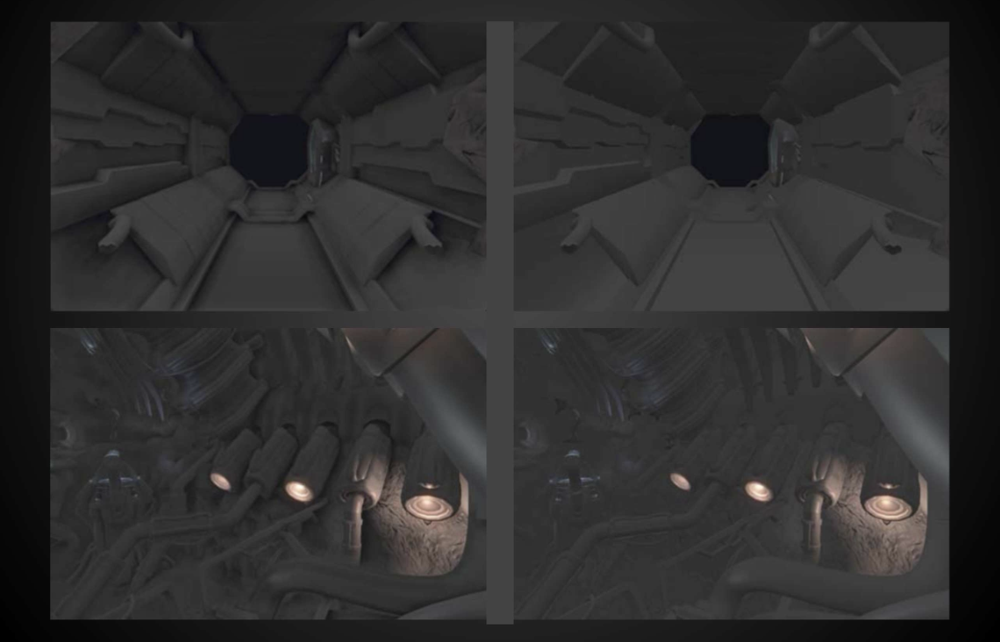
而 SSAO 是在屏幕空间上实现 GI 近似表示的一种方法。它的关键思路包括：
-
由于我们无法得知入射的间接光照，所以先假设对于每个着色点，对于所有方向的光照都是恒定的（这就和 Blinn-Phong 反射模型的假设一样）
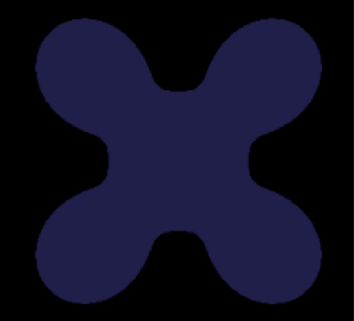
-
考虑到不同着色点在不同方向上的可见性差异
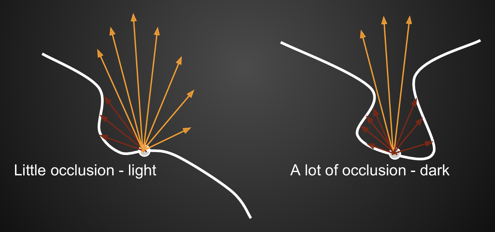
例子
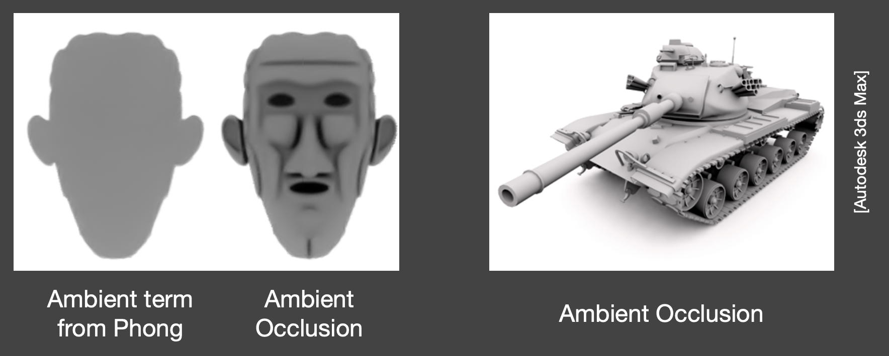
-
假设材质是漫反射的
接下来我们深入 SSAO 的理论部分——依旧渲染方程起手：
并且利用经典的「RTR 近似公式」（这是闫老师取的黑话，正式场合中不要这么叫）\(\int_{\Omega} f(x)g(x) \,\mathrm{d}x \approx \dfrac{\int_{\Omega_G} f(x) \,\mathrm{d}x}{\int_{\Omega_G} \,\mathrm{d}x} \cdot \int_{\Omega} g(x) \,\mathrm{d}x\)，将可见性项分离出来：
- 蓝色部分 \(\stackrel{\triangle}{=} k_A = \dfrac{\int_{\Omega^+} V(p, \omega_i) \cos \theta_i \text{d} \omega_i}{\pi}\)（即来自所有方向的加权平均可见性值 \(\overline{V}\)）
- 橙色部分 = \(L_i^{\text{indir}}(p) \cdot \dfrac{\rho}{\pi} \cdot \pi = L_i^{\text{indir}}(p) \cdot \rho\)（对 AO 而言是常量）
因此环境光就被近似表达为可见性均值与某个常量的乘积。接下来我们进行更深一步的理解：
-
RTR 近似公式可以简写为：
\[ \int_\Omega f(x)g(x) \text{d}x \approx \overline{f(x)} \cdot \int_\Omega g(x) \text{d}x \]其中 \(\overline{f(x)}\) 就是 \(f(x)\) 在积分区间 \(G\) 上的平均值。由于 \(G = L \cdot f_r\) 就是一个常数（\(L\) 为间接光照），因此在 AO 中，这种近似实际上是能得到准确值的。
-
另一个问题是可以看到近似后的渲染方程中三个 \(\text{d}\omega_i\) 前都有一个 \(\cos \theta_i\) 项，其中蓝色部分的两项是不能消去的，因为 \(\cos \theta_i \text{d}\omega_i\) 合在一起表示一个投影立体角(projected solid angle) \(\text{d}x_\perp\)
- 单位半球 -> 单位圆盘
- 投影立体角的积分 == 单位圆盘的面积 == \(\pi\)，这就解释了橙色部分的计算
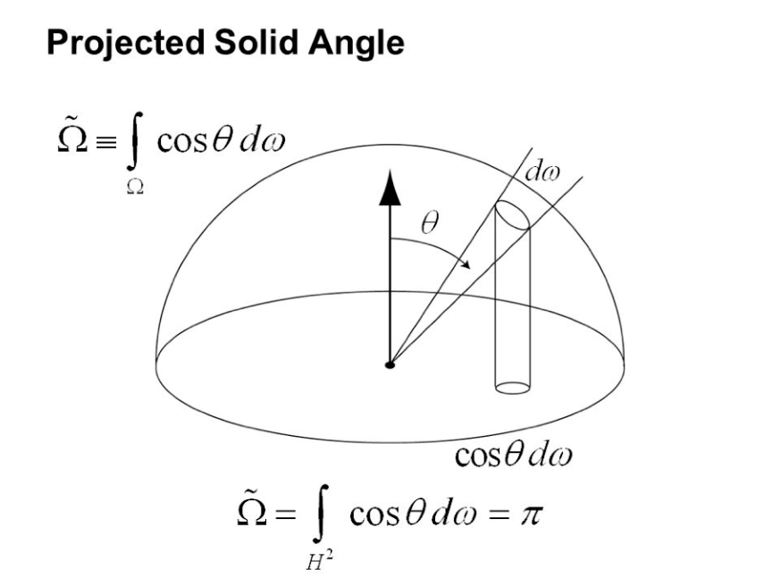
现在让我们以更简单的视角来理解整个过程：
- 均匀入射光照 \(L_i\) 是常量
- 漫反射 BRDF \(f_r = \dfrac{\rho}{\pi}\) 也是常量
-
因此将这两项从积分中提取出来，得到：
\[ \begin{aligned} L_{o}\left(\mathrm{p}, \omega_{o}\right) & =\int_{\Omega^{+}} L_{i}\left(\mathrm{p}, \omega_{i}\right) f_{r}\left(\mathrm{p}, \omega_{i}, \omega_{o}\right) V\left(\mathrm{p}, \omega_{i}\right) \cos \theta_{i} \mathrm{~d} \omega_{i} \\ & =\frac{\rho}{\pi} \cdot L_{i}(p) \cdot \int_{\Omega^{+}} V\left(\mathrm{p}, \omega_{i}\right) \cos \theta_{i} \mathrm{~d} \omega_{i} \end{aligned} \]
接下来该考虑如何实时计算遮挡值 \(k_A(p)\)。先来比较对象空间和屏幕空间各自的特点：
-
在对象空间中（世界坐标系）
- 对几何体进行射线投射(raycast)
- 速度慢，需要简化，以及/或者空间数据结构
- 取决于场景复杂度
-
在屏幕空间中
- 在渲染后处理中完成
- 无需预处理
- 不依赖场景复杂度
- 简单
- 非物理精确
一个比较直观的方法是：对于着色点，在半径为 \(R\) 的半球范围内计算局部遮挡。这种方法在室内场景等封闭区域中效率更高且效果更好。
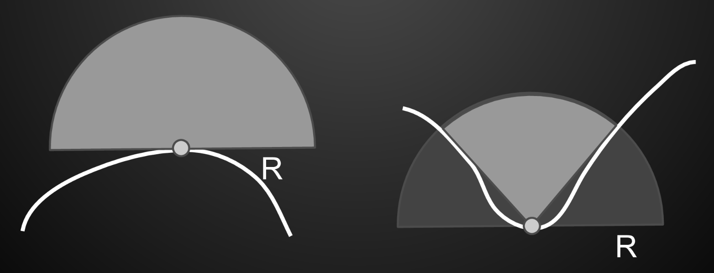
而 SSAO 的做法是利用现成的深度缓冲区（z-buffer）作为场景几何的近似：在每个像素周围的球体内采样，并与缓冲区进行对比测试。
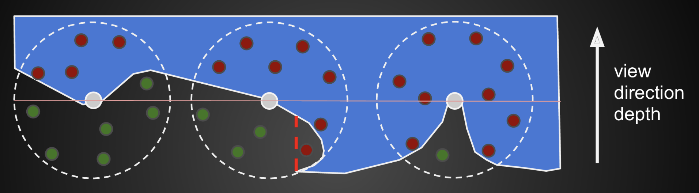
- 若超过半数采样点位于内部，则应用 AO，其强度取决于通过和未通过深度测试的采样点比例
- 由于无法获取法线信息，此处使用整个球体而非半球体进行采样
-
虚假遮挡(false occlusions)：由于是对场景几何的近似，所以可能存在判定错误的情况，比如下图红线后的那个点明明是看得到的，却被认为是在内部的
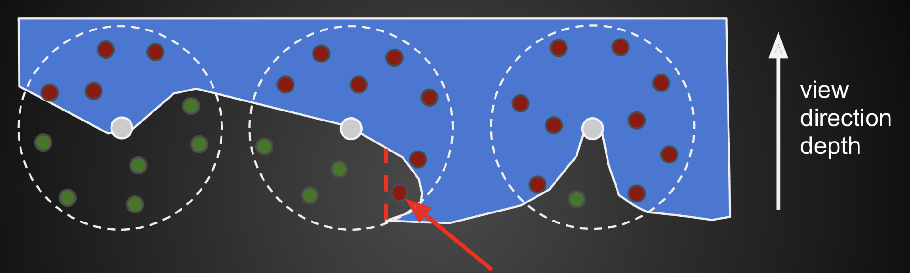
例子
可以看到，由于只能获取屏幕信息，所以 SSAO 误以为石凳会对地板有一个 AO，所以石凳在地板上产生阴影，这看起来很不真实。
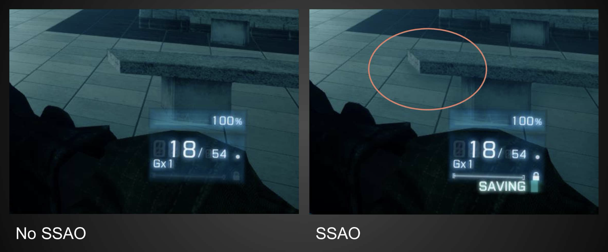
-
虽然采样点未按余弦加权（因此物理上不准确），但视觉效果上没啥问题
采样点选择的注意事项
- 采样点越多，精度越高
- 所以要想获得良好渲染效果就需要大量采样点，但出于性能考虑，通常仅使用 16 个左右
- 采用随机纹理位置以避免带状伪影问题
-
若结果带有噪点，可通过对边缘进行模糊处理
例子
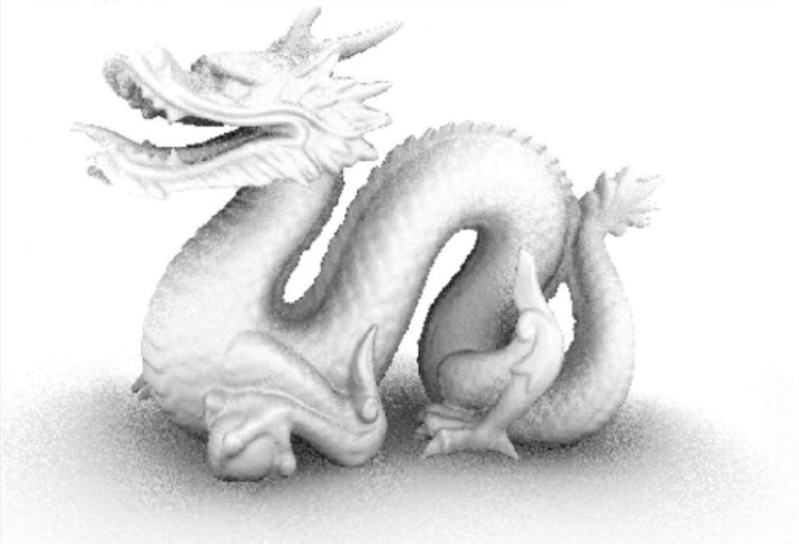
Horizon Based Ambient Occlusion (HBAO)
如果得知每个着色点的法线信息，那我们就可以实现更加精确的 AO，这种方法就是基于水平线的环境光遮蔽(horizon based ambient occlusion, HBAO)。相比 SSAO，它借助法线信息，只在与法线垂直的平面上方的半球区域内采样（可通过余弦加权实现）。
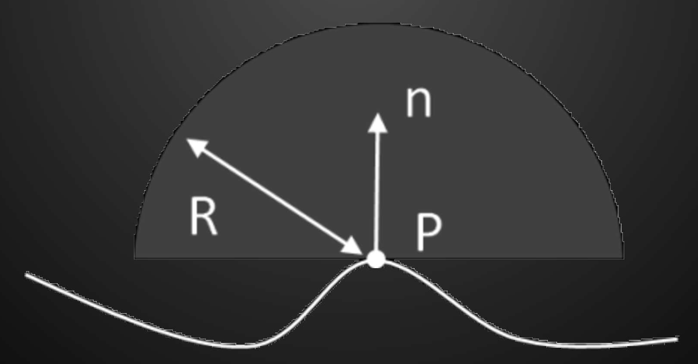
效果比对
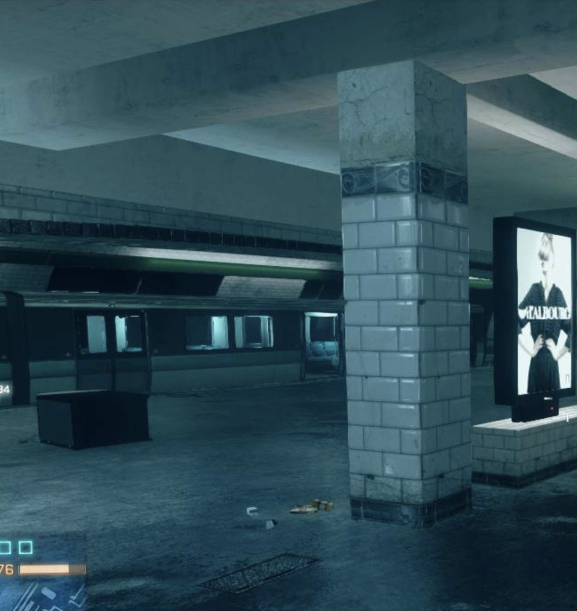
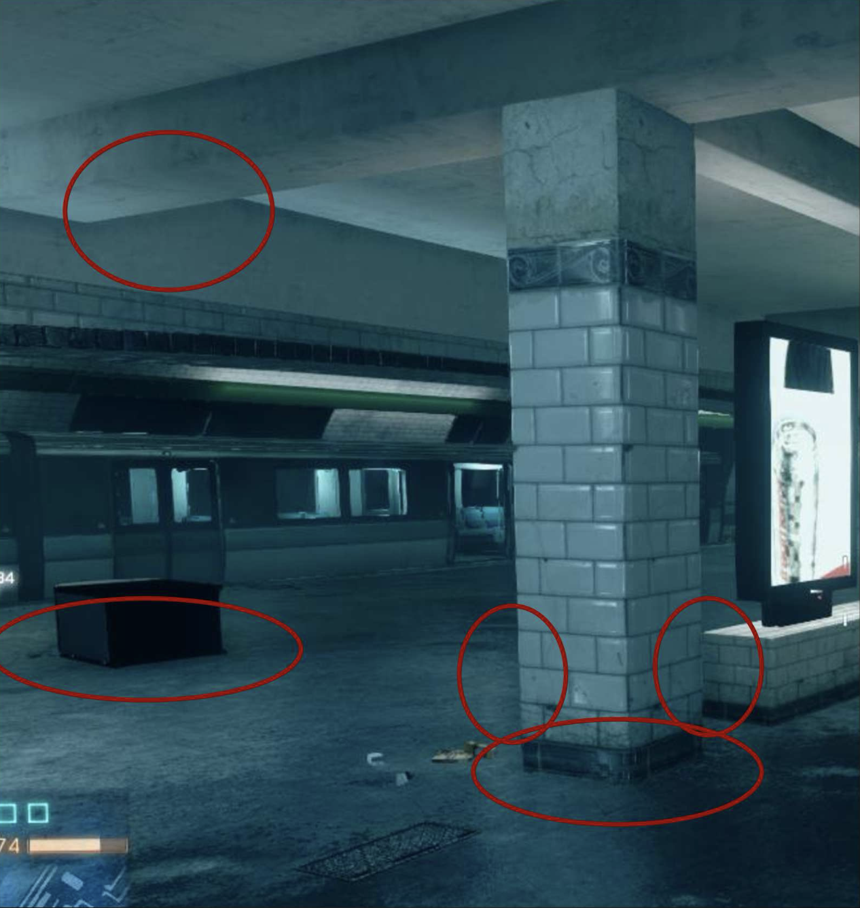
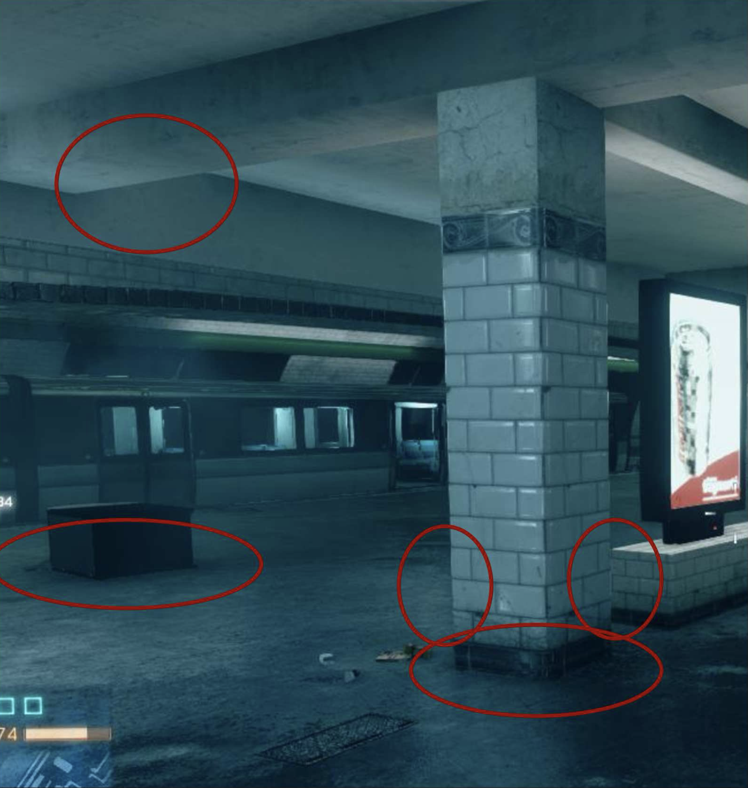
Screen Space Directional Occlusion (SSDO)
屏幕空间方向性遮挡(screen space directional occlusion, SSDO)技术是对 SSAO 的一种改进，考虑了（更多）真实的间接光照。
其关键思路是利用已经知道的一些关于间接光照的信息，而非假设间接光照是均匀的。具体来说，SSDO 利用了来自相机（而非 RSM）的直接光照的渲染结果.
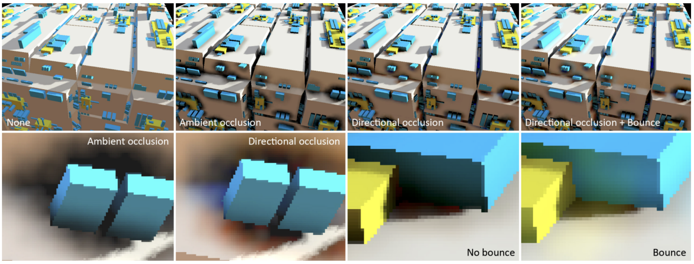
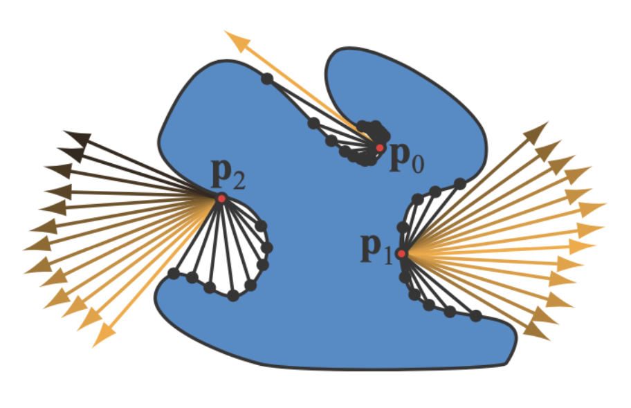
这和路径追踪的思路很像：
- 从着色点 p 处发射一条随机射线
- 若未击中障碍物，则为直接光照
- 若击中障碍物，则为间接光照
与 SSAO 的比较：
- AO：间接光照 + 无间接光照
- DO：无间接光照 + 间接光照（与路径追踪相同）
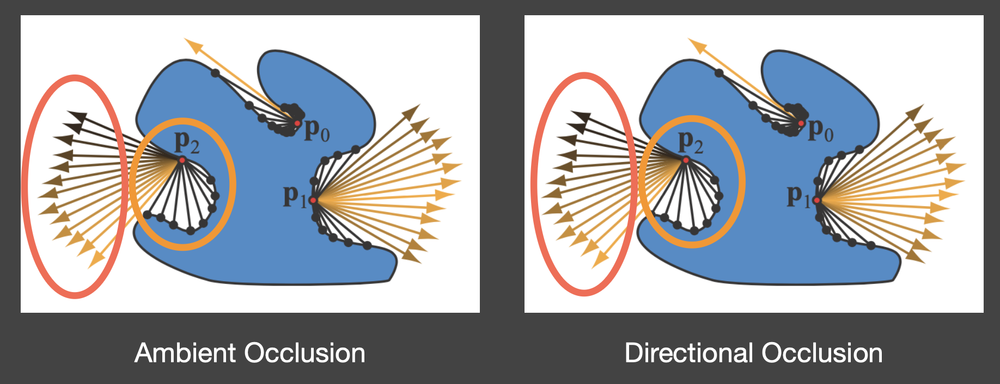
回到渲染方程，我们分别考虑未遮挡（直接光照）和已遮挡（间接光照）的方向：
之前已推导过来自像素（面片）的间接光照。
类似于 HBAO，测试采样点在局部半球中的深度。
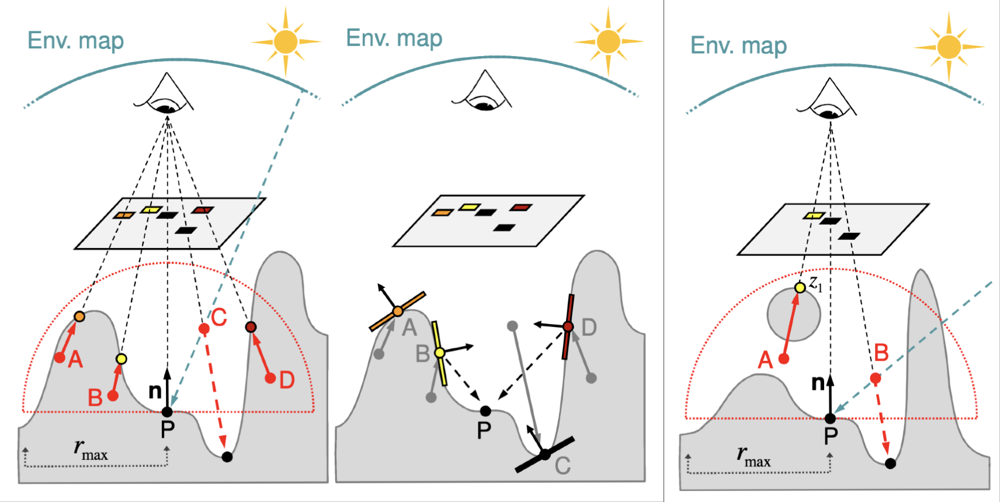
- 对于左侧两幅示意图，A, B, D 三点对 P 点的间接光照做出贡献
- 对于最右侧的示意图，虽然 A, B 两点到 P 点之间都没有被挡住，但相机看不到 A 点且 B 点对应的像素深度不在 P 点的判定范围内，所以这两点无法对 P 点做出贡献
优点：质量上和离线渲染接近
缺点
-
只能表示小范围的 GI
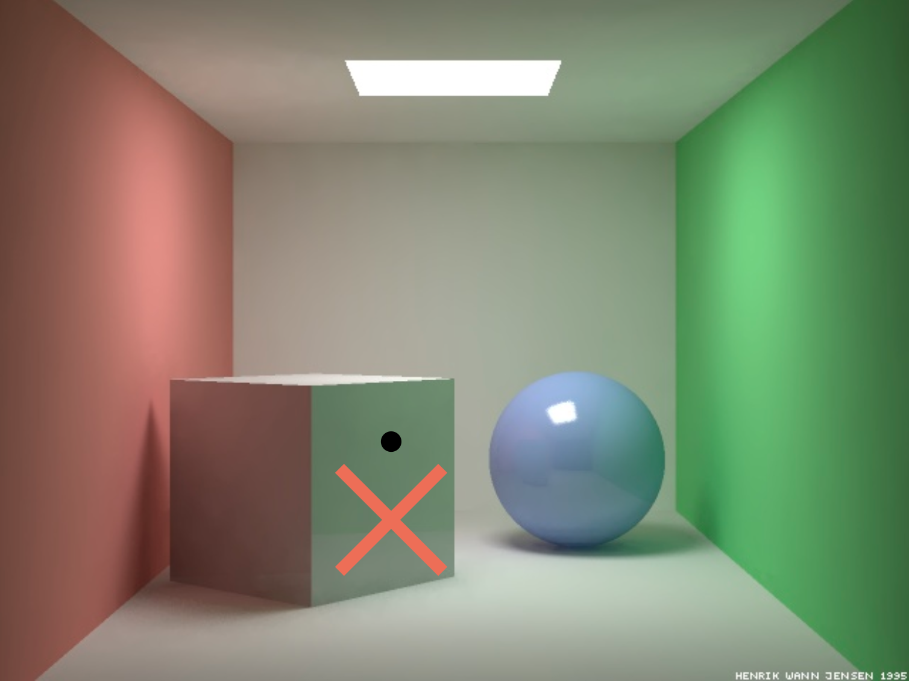
- 如果这幅图用 SSDO 方法来渲染的话，图中的黑点部分不太会考虑到绿墙的贡献
-
可见性是基于相机到着色点的可见性来判断的，有时不太准确
-
屏幕空间的问题：未观察到的表面信息缺失
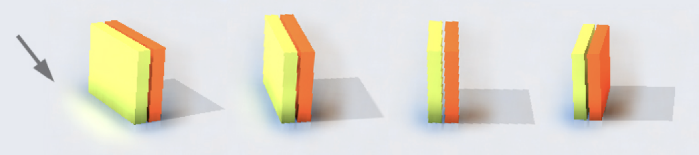
Screen Space Reflection (SSR)
屏幕空间反射(screen space reflection, SSR)也是一种 RTR 领域的全局光照方法。它是在屏幕空间上进行光线追踪，但又不需要 3D 图元信息（三角形等）。
SSR 的两项基本任务是：
- 相交：任意光线与场景之间的交点
- 着色：相交像素对着色点的贡献
例子
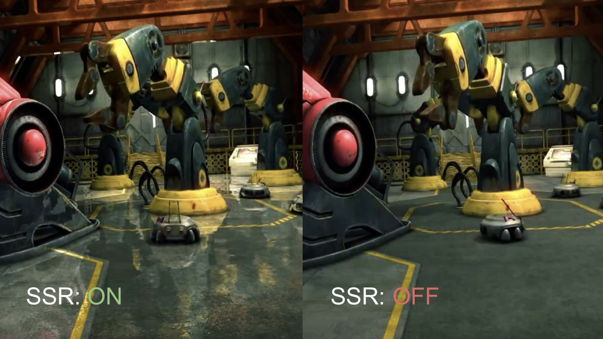
动机
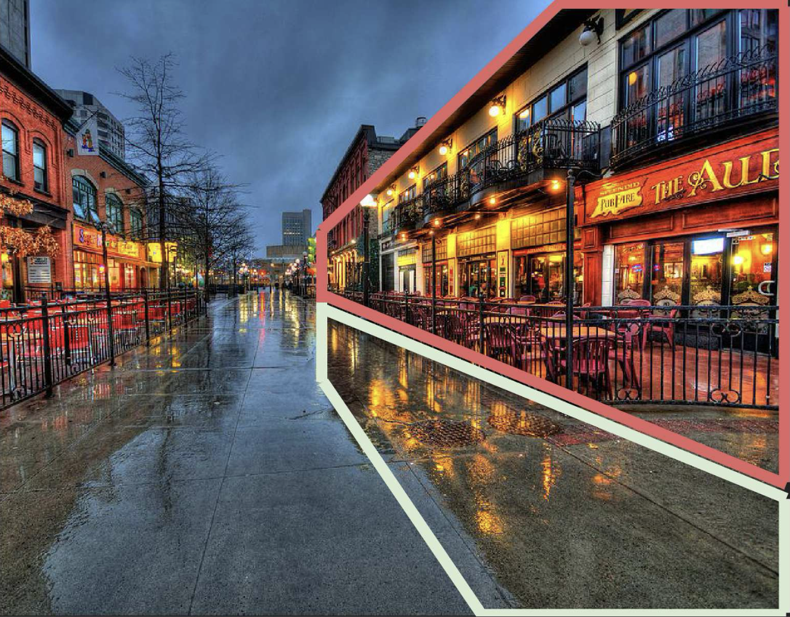
可以看到雨后的街道上有很强烈的反射光，反射出来的倒影（白色区域）正是街边的建筑（红色区域）。
最基本的 SSR 算法是直接做镜面反射(mirror reflection)——对于每一个片元：
- 计算反射光线
- 沿光线方向追踪（使用深度缓冲）
- 取交点颜色作为反射颜色
例子
镜面反射：
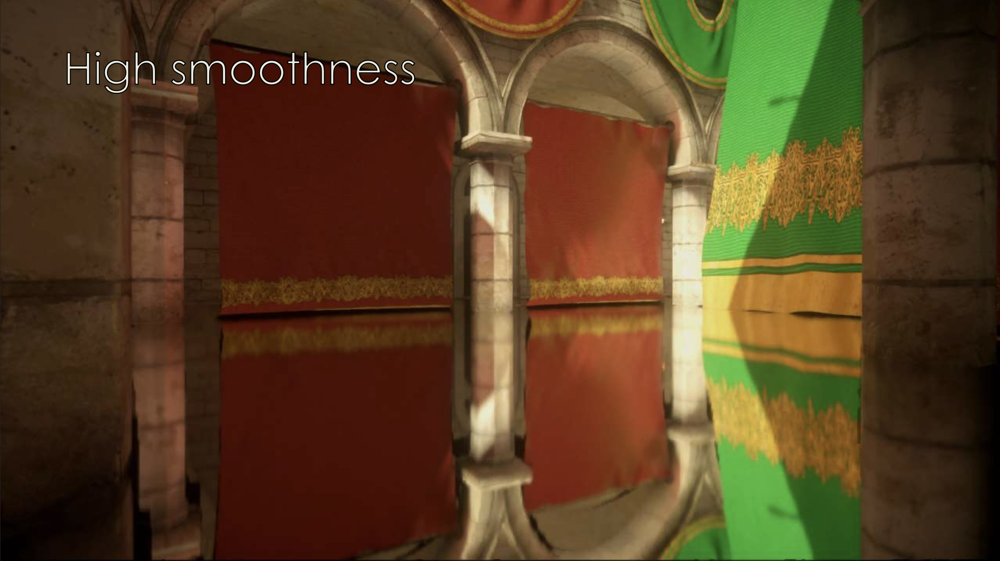
类似金属表面反射：
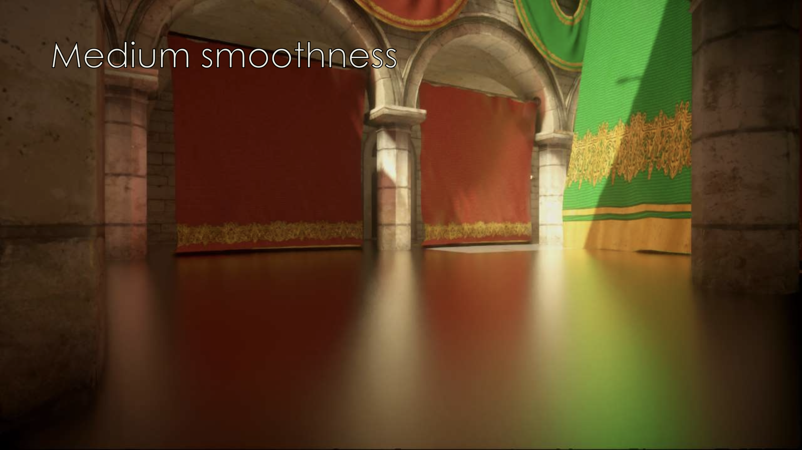
整个流程如下：
Intersection
那么对于地面上的一个点，要想知道它的反射光与场景中的哪个像素相交，可以通过线性射线匹配(linear raymatch)的方法来实现。
- 每一步检查深度值
- 渲染质量取决于步长
- 能够被细化
由于步长过大过小都不好，于是人们研究出动态调整步长的方法。首先得到深度图的 mip-map，但这个 mip-map 记录的是多个像素对应深度的最小值（最近）而非平均值。
- 这和 3D 空间中的层级结构（BVH、KD 树）非常相似，能够快速批量排除不相交的情况
- 最小操作确保了逻辑的保守性
- 如果一条射线连较大的节点都无法相交，那么它绝不会与该节点的任何子节点相交
例子
问题
可以看到，由于只利用了屏幕空间的信息，手心的倒影就没有在桌面上出现，因为相机看不到手心。
类似地，这块窗帘的顶部在屏幕空间之外，所以地面倒影中的窗帘也只有看到的那部分，顶部被截断了。解决方法是沿着反射光的距离进行衰减操作，把太远物体的反射光给虚化掉。
Shading
SSR 的着色部分可完全沿用路径追踪的那套计算。我们还是假设反射物是漫反射材质（次级光源）的。
其中 \(L_{i}(\mathrm{p}, \omega_{i}) = L_o(q, q \to p)\)。
- 无需引入平方衰减
- 能很好地处理着色点和次级光源之间的遮挡问题
例子
提高部分
原来，对于每一个着色点，计算 BRDF 时要考虑一个 lobe 范围内反射光，进行随机采样。
一种节省开销的方法是复用命中点邻居范围内的计算结果。
这就相当于对采样点进行预滤波操作（取均值），然后按 BRDF 进行加权计算。
优点
- 在金属光泽与镜面反射材质上计算反射速度快
- 渲染质量优良
- 无尖峰和遮挡问题
缺点
- 在漫反射情况下效率较低
- 屏幕外信息缺失
评论区